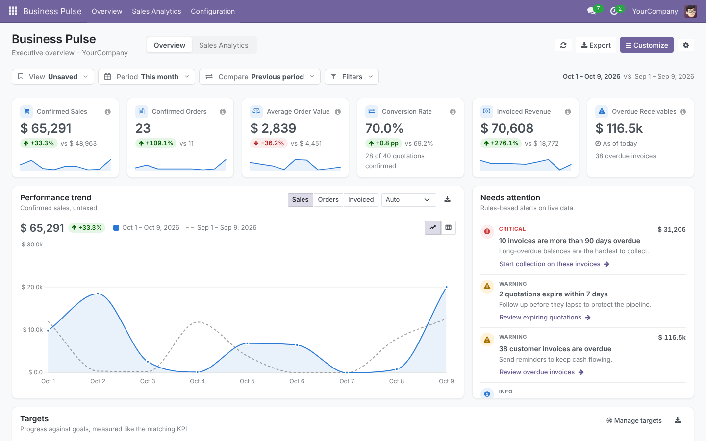
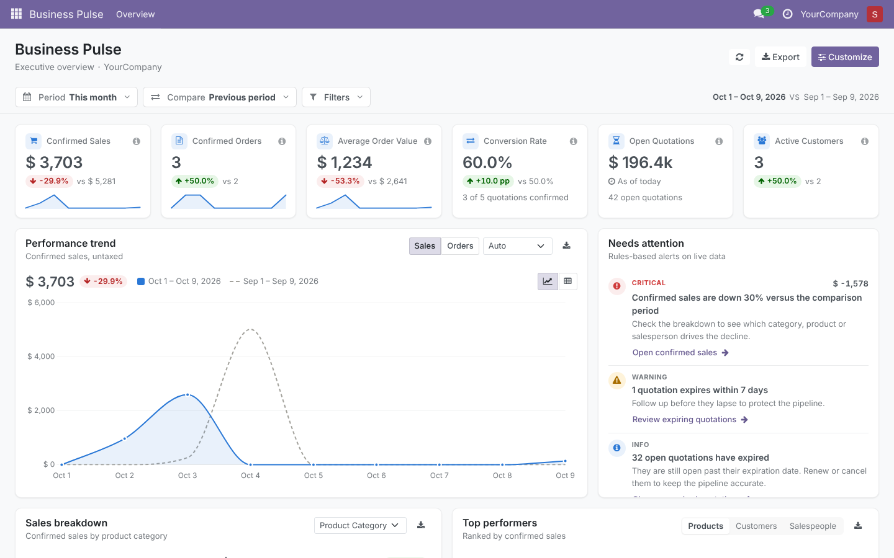
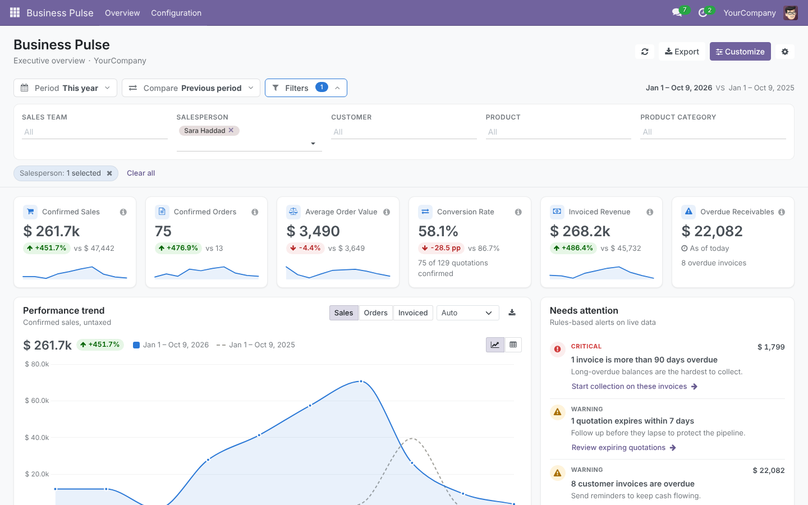
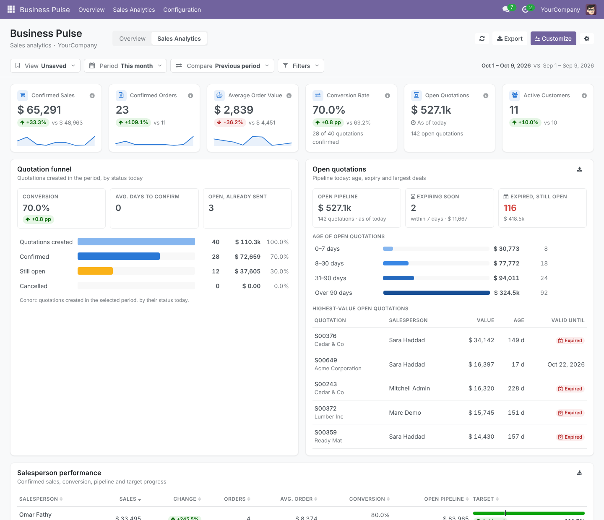
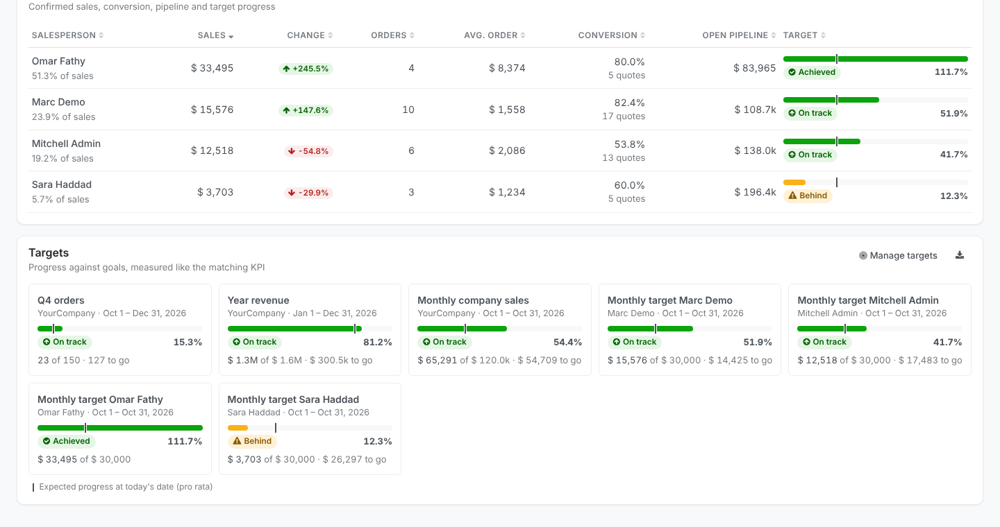
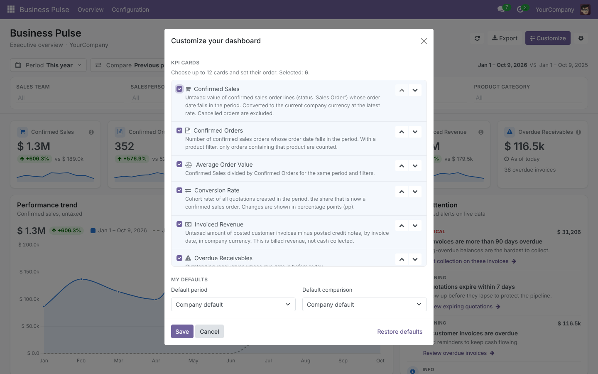
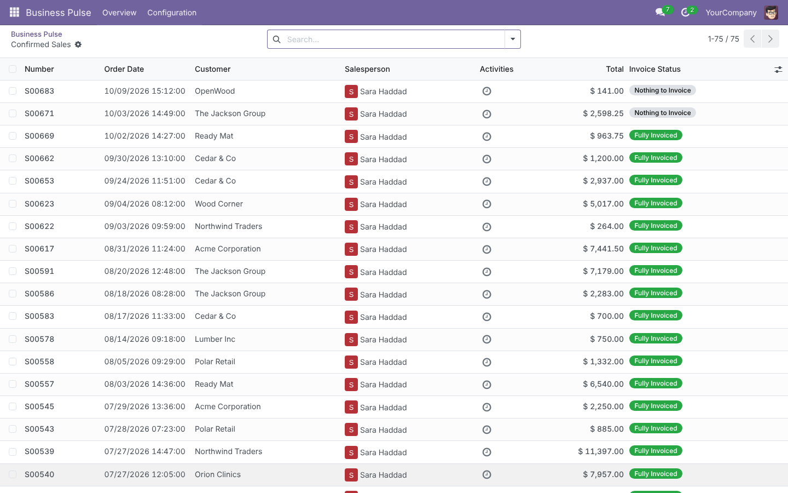

Stop jumping between Sales, Invoicing and reports to understand how the company is doing. Business Pulse brings the numbers that matter into one fast, clear workspace. Every figure links to the exact records behind it, and every number follows the access rights of the person looking at it.
Odoo 18.0 Tested on Community Requires Sales + Invoicing No external services

Confirmed sales, orders, average order value, conversion rate, open quotations, active and new customers, invoiced revenue, receivables and overdue receivables. Each card has a trend sparkline, a comparison and a plain-language definition.
Compare with the previous period, the same period last year or any custom range. Month-to-date is compared with the same days of last month, so partial periods are never compared with full ones. Rates change in percentage points (pp), not misleading percentages.
Click any card, chart point, bar, ranking row, aging bucket or alert to open exactly the orders or invoices behind that number, with the same filters. Use the breadcrumb to come back with your filters intact.
An interactive trend chart (sales, orders or invoiced revenue) with automatic or manual day/week/month/quarter grouping and a table view. Break sales down by category, product, salesperson, team, customer or company. Rank top products, customers and salespeople.
Outstanding and overdue balances with Not yet due, 1–30, 31–60, 61–90 and 90+ day buckets, and the customers with the largest overdue balances. Based on real residual amounts, not on assumptions.
Deterministic, configurable rules: quotations about to expire, expired or stalled quotations, sales decline beyond a threshold, overdue and long-overdue invoices. Each alert explains the issue and links to the next step.


Thirteen date presets plus custom ranges, and filters for company, sales team, salesperson, customer, product and product category. Active filters appear as removable chips. When a filter does not apply to a section (for example a product filter on receivables), the section says so instead of hiding it.
A dedicated page for sales managers: how quotations convert, where the pipeline is ageing, and how every salesperson is doing against their target.

Quotations created in the period and what happened to them: confirmed, still open or cancelled, with values, conversion versus the comparison period and average days to confirm. Uses a clear cohort rule, so periods are never mixed.
Open quotations by age (0–7, 8–30, 31–90, 90+ days), quotations expiring soon, expired quotations still open, and the highest-value deals waiting for a decision.
A sortable table with confirmed sales, change, orders, average order value, conversion, open pipeline and progress against each person's target.

Each user chooses and orders up to 12 KPI cards and sets a personal default period and comparison. Administrators set company defaults, alert thresholds and export limits in Settings. Personalization changes what is displayed, never which records a user can see.


| Confirmed Sales | Untaxed value of confirmed sales order lines whose order date is in the period, in the active company currency. Cancelled orders are excluded. |
| Confirmed Orders | Number of confirmed sales orders whose order date is in the period. |
| Average Order Value | Confirmed Sales divided by Confirmed Orders. |
| Conversion Rate | Of all quotations created in the period, the share that is now a confirmed order (cohort-based). |
| Invoiced Revenue | Untaxed amount of posted customer invoices minus posted credit notes, by invoice date. This is billed revenue, not cash collected. |
| Outstanding / Overdue Receivables | Residual amount of posted customer invoices and credit notes as of today. Overdue means the due date is before today. |